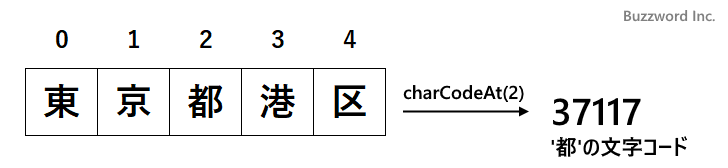

- Home ›
- JavaScript入門 ›
- 文字列
文字列の指定した位置にある文字のUTF-16文字コードを取得する(charCodeAt)
String オブジェクトのインスタンスメソッドである charCodeAt は、文字列の指定した位置にある文字の UTF-16 文字コードを取得します。ここでは String オブジェクトの charCodeAt メソッドの使い方について解説します。
※ Unicode コードポイントを取得する場合は codePointAt メソッドを使ってください。(詳細は「文字列の指定した位置にある文字のUnicodeコードポイントを取得する(codePointAt)」を参照されてください)。
指定位置のUTF-16文字コードを取得する(charCodeAt)
String オブジェクトの charCodeAt メソッドは、対象の文字列の指定したインデックスが示す位置にある文字の UTF-16 文字コードを取得します。書式は次のとおりです。
文字列.charCodeAt(インデックス)
インデックスで指定した位置にある文字の UTF-16 文字コードを戻り値として返します。インデックスは文字列の最初の文字が 0 、次の文字が 1 となります。範囲外のインデックスを指定した場合は NaN が返されます。

UTF-16 の文字コードは 0x0000 から 0xFFFF (0 から 65535) の間の数値を返します。サロゲートペアで表される文字については 1 つ目の文字コードが 0xD800 から 0xDBFF (55296 から 56319) 、 2 つ目の文字コードが 0xDC00 から 0xDFFF (56320 から 57343) の間の数値を返します。(サロゲートペアについては「JavaScriptにおけるサロゲートペアとは」を参照されてください)。
次のサンプルをみてください。
let word = '花言葉'; console.log(word.charCodeAt(0)); >> 33457 console.log(word.charCodeAt(2)); >> 33865 console.log(word.charCodeAt(4)); >> NaN
インデックスに 0 、 2 、 4 をそれぞれ指定して文字を取得しています。インデックスの 4 は文字列の範囲外なので NaN を取得しています。
サロゲートペアで表される文字については次のようになります。
let word = '𪛊'; console.log(word.charCodeAt(0)); >> 55401 console.log(word.charCodeAt(1)); >> 57034
サロゲートペアで表される文字は 1 文字に対して 2 つの文字コードを使って表されます。
-- --
String オブジェクトの charCodeAt メソッドの使い方について解説しました。
( Written by Tatsuo Ikura )

著者 / TATSUO IKURA
初心者～中級者の方を対象としたプログラミング方法や開発環境の構築の解説を行うサイトの運営を行っています。